一般論では語れない [梅吉]
先日見たネットニュース。
「猫はどうして無表情なの？」の見出しにえ〜〜〜〜〜っ！！！！！

なんでも猫には人間・犬に比べて表情筋が少ないのだとか。
（犬には人間に近いくらいの数の表情筋があるそうですよ。）

ヒモの先につけたモール一つでこんなに色々な表情を見せてくれるのに。
表情筋少ないかな〜〜〜

群れで暮らす犬と違って単独で行動する猫はあまり自分の感情を表に出す必要がないのだとか。

我が家は二人と一匹の群れ行動。
すぐ鼻ちゅーして来る飼い主に「なにするんじゃ！」と怒ってみたり
「ごはんくださいにゃ![[黒ハート]](https://blog.ss-blog.jp/_images_e/136.gif) 」とおねだりしてみたり
」とおねだりしてみたり
鬼の形相で怒るおかーさんを「けへへへっ」と小バカにして笑ってみたり。
梅吉さんは感情を表現する必要が沢山あるものね。
表情筋、発達した？
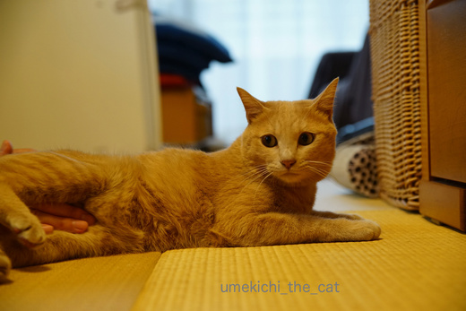
こんな表情から
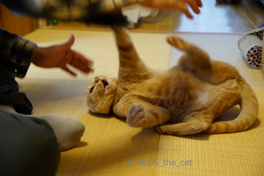
あら怖い。
ネットニュースの最後、
「複雑な人間関係に疲れている現代人は猫の無表情に癒されるのかも。」
と結んでありましたが
おかーさんは梅吉さんのくるくるよく変わる表情に癒されてますよ。
 ↑ガブッと一押し↑
↑ガブッと一押し↑
「猫はどうして無表情なの？」の見出しにえ〜〜〜〜〜っ！！！！！

なんでも猫には人間・犬に比べて表情筋が少ないのだとか。
（犬には人間に近いくらいの数の表情筋があるそうですよ。）

ヒモの先につけたモール一つでこんなに色々な表情を見せてくれるのに。
表情筋少ないかな〜〜〜

群れで暮らす犬と違って単独で行動する猫はあまり自分の感情を表に出す必要がないのだとか。

我が家は二人と一匹の群れ行動。
すぐ鼻ちゅーして来る飼い主に「なにするんじゃ！」と怒ってみたり
「ごはんくださいにゃ
鬼の形相で怒るおかーさんを「けへへへっ」と小バカにして笑ってみたり。
梅吉さんは感情を表現する必要が沢山あるものね。
表情筋、発達した？
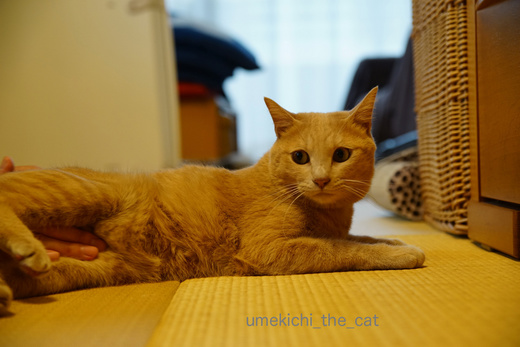
こんな表情から
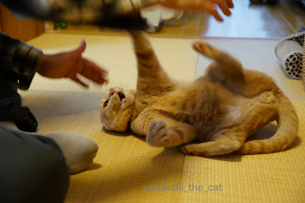
あら怖い。
ネットニュースの最後、
「複雑な人間関係に疲れている現代人は猫の無表情に癒されるのかも。」
と結んでありましたが
おかーさんは梅吉さんのくるくるよく変わる表情に癒されてますよ。
成長しているんですよ [梅吉]
かつてリビングで使っていたゴミ箱。

アート作品のように不思議な形になってしまいました。
このアートを作り出したのは・・・

![[猫]](https://blog.ss-blog.jp/_images_e/101.gif) なかにはいったらおもろいんやで。
なかにはいったらおもろいんやで。
どーしんにかえってころげまわってみましょか。
あたまを入れて・・・・

このままずい〜〜〜っと・・・・

なんかおかしいんちゃうか。

ごみばこ、ちっさなったやろ。
梅吉さんはこんなふうに遊びたかったようですよ。
幼い頃はゴミ箱が好きで好きで。
しょっちゅうこんなふうに転げ回っていました。
ゴミを入れたら全部出してしまうので使用不可。梅吉のおもちゃとなったのでした。
そしてゴミ箱は不思議な形に^^;
梅吉の体が大きくなってゴミ箱で遊ばなくなった今でも
我が家のリビングにはゴミ箱はありません。
少々面倒ですがその都度キッチンのゴミ箱へ捨てに行っています。
それほど広い家じゃないからね〜。
みなさんはお家の中のゴミ箱ってどうしていますか？
ちなみに我が家はキッチンに一つ（燃やせるゴミ用・プラゴミ用の連結式）と
寝室に一つの計二つです。
小さなゴミ箱といえど一つものが減ると狭い家がすっきりしたような気になります![[ぴかぴか（新しい）]](https://blog.ss-blog.jp/_images_e/150.gif)
↑ガブッと一押し↑

アート作品のように不思議な形になってしまいました。
このアートを作り出したのは・・・


梅吉さんはこんなふうに遊びたかったようですよ。
幼い頃はゴミ箱が好きで好きで。
しょっちゅうこんなふうに転げ回っていました。
ゴミを入れたら全部出してしまうので使用不可。梅吉のおもちゃとなったのでした。
そしてゴミ箱は不思議な形に^^;
梅吉の体が大きくなってゴミ箱で遊ばなくなった今でも
我が家のリビングにはゴミ箱はありません。
少々面倒ですがその都度キッチンのゴミ箱へ捨てに行っています。
それほど広い家じゃないからね〜。
みなさんはお家の中のゴミ箱ってどうしていますか？
ちなみに我が家はキッチンに一つ（燃やせるゴミ用・プラゴミ用の連結式）と
寝室に一つの計二つです。
小さなゴミ箱といえど一つものが減ると狭い家がすっきりしたような気になります
食欲の春 [梅吉]
冷蔵庫からおやつが出てくる気配を察すると光よりも早くやってくるこの方。

なんでそんなにお腹が空くんでしょうね梅吉さんは。
まだまだ成長期？
そろそろ２歳になるってことは人間でいうと２1〜３歳くらいよね。
大学生ってところかな。

その頃の友人にはチャーハンをおかずに白飯を食べている人がいましたよ。
壮絶な満腹感を得られるのが良いのだとか・・・
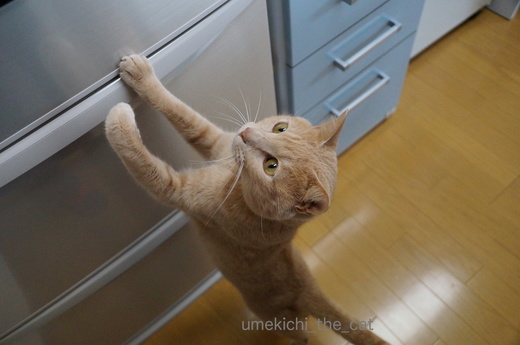
梅吉さんもそんな感じよね〜。
ごちゃごちゃいうとらんと、はようっ！
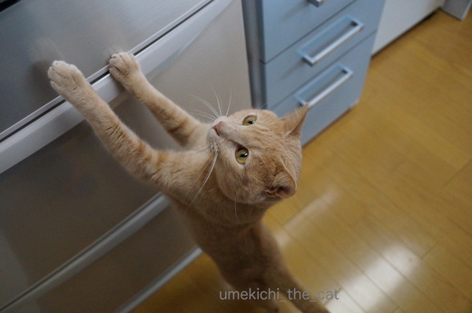
もうちょっとてをのばせば・・・・
この後冷蔵庫のヘリに爪を引っ掛けて懸垂状態に。
そのまま中に入って行こうとしたので撮影続行不可でした〜( ꒪⌓꒪)
春夏秋冬年間を通じて食欲はとどまるところを知りません・・・
ダイエット成功後フードの量は少し増量。

それでも体重はリバウンドもせず良い感じをキープしています。
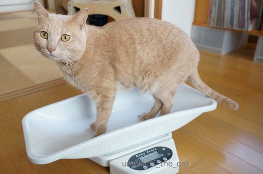
どやっ
↑ガブッと一押し↑

なんでそんなにお腹が空くんでしょうね梅吉さんは。
まだまだ成長期？
そろそろ２歳になるってことは人間でいうと２1〜３歳くらいよね。
大学生ってところかな。

その頃の友人にはチャーハンをおかずに白飯を食べている人がいましたよ。
壮絶な満腹感を得られるのが良いのだとか・・・
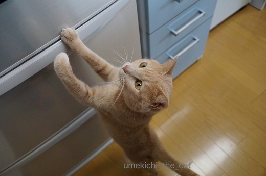
梅吉さんもそんな感じよね〜。
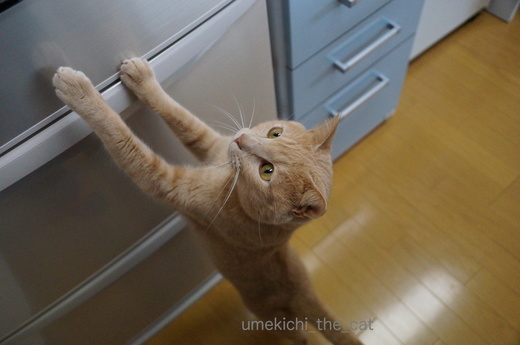
この後冷蔵庫のヘリに爪を引っ掛けて懸垂状態に。
そのまま中に入って行こうとしたので撮影続行不可でした〜( ꒪⌓꒪)
春夏秋冬年間を通じて食欲はとどまるところを知りません・・・
ダイエット成功後フードの量は少し増量。

それでも体重はリバウンドもせず良い感じをキープしています。
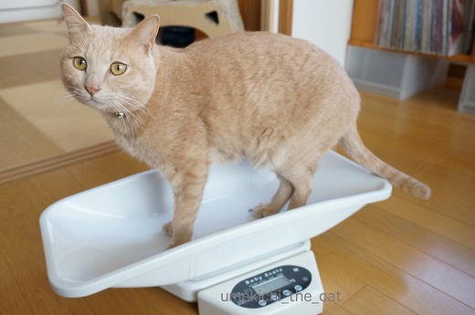
あちらからこちらから [梅吉]


ゆるくないキャラ猫 [梅吉]
時々ハンガーについているクッション。
滑り止めなんだろうけれど
その滑りの悪さがかえって煩わしいので捨てています。
先日も捨てようと思ったら視線の先に梅吉。
それはもう頭に乗せるしかないですよね(≧▽≦)
あらあら、軽いし切れ目の幅がちょうどお耳にあってませんか？

い〜よ〜い〜よ〜！！いい感じで頭に落ち着いて来ましたよ。
お耳の出方も完璧です。
何ですかその一体感は！
ビーグルとか耳の長いワンコさんのようにも見えるし・・・

兜のようにも見えるじゃない？しころ（首辺りを守る部分の呼称なんですって）が
異様に長いけど・・・・
猫に兜・・・・それはひこにゃんですね！

はい！雑なひこにゃんの出来上がり〜。
↑ガブッと一押し↑
滑り止めなんだろうけれど
その滑りの悪さがかえって煩わしいので捨てています。
先日も捨てようと思ったら視線の先に梅吉。
それはもう頭に乗せるしかないですよね(≧▽≦)
あらあら、軽いし切れ目の幅がちょうどお耳にあってませんか？

い〜よ〜い〜よ〜！！いい感じで頭に落ち着いて来ましたよ。
お耳の出方も完璧です。
何ですかその一体感は！
ビーグルとか耳の長いワンコさんのようにも見えるし・・・

兜のようにも見えるじゃない？しころ（首辺りを守る部分の呼称なんですって）が
異様に長いけど・・・・
猫に兜・・・・それはひこにゃんですね！

はい！雑なひこにゃんの出来上がり〜。
そ〜〜〜〜〜〜〜っと・・・・ [梅吉]
何が気になるのか怖いものでも見るように顔を出す梅吉さん。

再生できない場合、ダウンロードは🎵こちら
音楽付きだと更にそれらしい雰囲気に。

なんや、なんにもないわ。よっこいしょ・・・・っと
↑ガブッと一押し↑

再生できない場合、ダウンロードは🎵こちら
音楽付きだと更にそれらしい雰囲気に。

隠されると気になる！ [梅吉]
後ろ姿ににやにや [梅吉]
買い物から帰ってきてレジ袋を片付けようとすると走ってくるお方。

これを投げると・・・

ずだだだだだだだ〜〜〜〜〜〜っ


と、勢い良く走っていきます。
おちりとあちがかわいいなぁ・・・とにやにや。
猫は正面からも可愛いけれど後ろ姿もラブリーだよねと思っていたら
フェリシモ猫部でこんな企画をしていました。
イラストだけでたまらないわ〜。ある商品ってなんだろう。
応募してみたいのですが真後ろからのショットで頭からお尻まで切れていない・・・
との応募規定がハードル高し！なのです。

もってきたで〜
後ろ姿も良いけどやっぱり正面が素敵ですよ。梅吉さんは
↑ガブッと一押し↑

これを投げると・・・

ずだだだだだだだ〜〜〜〜〜〜っ


と、勢い良く走っていきます。
おちりとあちがかわいいなぁ・・・とにやにや。
猫は正面からも可愛いけれど後ろ姿もラブリーだよねと思っていたら
フェリシモ猫部でこんな企画をしていました。
イラストだけでたまらないわ〜。ある商品ってなんだろう。
応募してみたいのですが真後ろからのショットで頭からお尻まで切れていない・・・
との応募規定がハードル高し！なのです。

後ろ姿も良いけどやっぱり正面が素敵ですよ。梅吉さんは
上級下僕、下級下僕 [梅吉]
なかなか上手く食べられなかったサラダ。
お互い要領が分かってきたのかなかなか良い感じになってきました。

上級下僕がちゃんとサラダ鉢を抑えてあげて梅吉さんが引っこ抜く。
本にゃんは食べてるつもりなんですがほとんど口に入っていません^^;
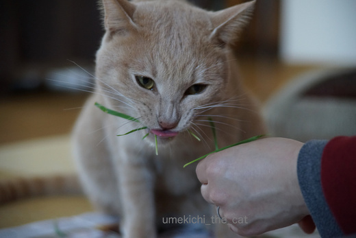
あたりに散乱した草を素早く集めて差し出す上級下僕。
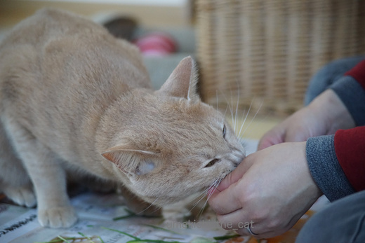
手までかじらないでくださいな。

鼻にしわを寄せて真剣に食べてます。妖怪猫の本性が出ちゃってますよ！
草の集め方が遅かったり草の持ち方が悪いと
爪を出した手で下僕の手をぎゅ〜〜〜っと押さえつけてきます。きびしいな〜。
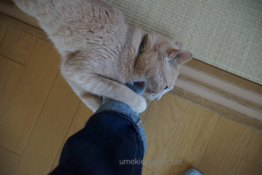
サラダの後はメインディッシュ。
下級下僕（おとーさん）の足をがぶ〜。
↑ガブッと一押し↑
お互い要領が分かってきたのかなかなか良い感じになってきました。

上級下僕がちゃんとサラダ鉢を抑えてあげて梅吉さんが引っこ抜く。
本にゃんは食べてるつもりなんですがほとんど口に入っていません^^;
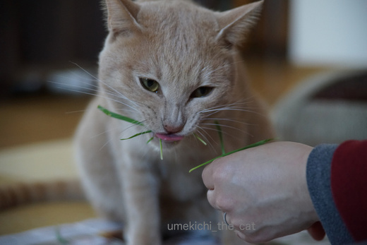
あたりに散乱した草を素早く集めて差し出す上級下僕。
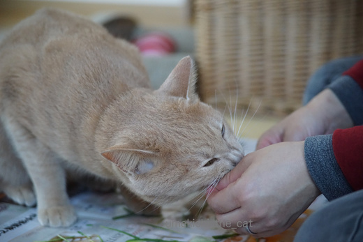
手までかじらないでくださいな。

鼻にしわを寄せて真剣に食べてます。妖怪猫の本性が出ちゃってますよ！
草の集め方が遅かったり草の持ち方が悪いと
爪を出した手で下僕の手をぎゅ〜〜〜っと押さえつけてきます。きびしいな〜。
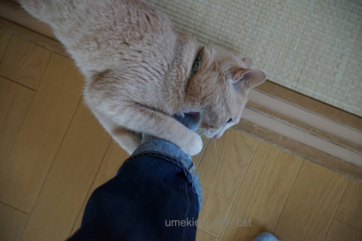
サラダの後はメインディッシュ。
下級下僕（おとーさん）の足をがぶ〜。
この冬の収穫 [梅吉]
ある時はきりりとお澄ましをして

また、ある時は眠り猫風に・・・・
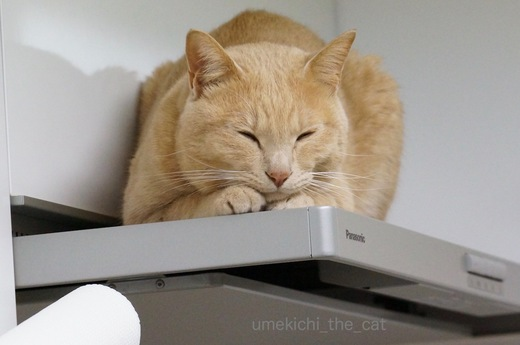
梅吉さんがいるのは

ガスレンジフードの上です。
おかーさんを監視する場所だけではなく暖がとれる場所だと知った今シーズンの冬。
料理中はもちろんやかんを火にかけると走ってやってきて温まっています。
下からじわじわとくる感じが心地よさそう。
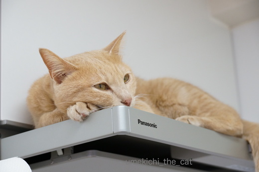
たまらんわぁ・・・・
冷蔵庫の上に飛び乗ってガスレンジフードの上に移動してくるのですが
「どんっ！！！！！」とすごい音がします。
毎日少しずつレンジフードの取り付け部分が緩んでそのうち落ちてくるのでは・・・
との若干の不安あり(◎_◎)
↑ガブッと一押し↑

また、ある時は眠り猫風に・・・・
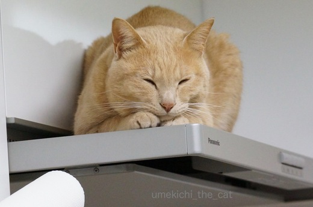
梅吉さんがいるのは

ガスレンジフードの上です。
おかーさんを監視する場所だけではなく暖がとれる場所だと知った今シーズンの冬。
料理中はもちろんやかんを火にかけると走ってやってきて温まっています。
下からじわじわとくる感じが心地よさそう。
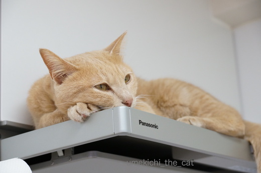
冷蔵庫の上に飛び乗ってガスレンジフードの上に移動してくるのですが
「どんっ！！！！！」とすごい音がします。
毎日少しずつレンジフードの取り付け部分が緩んでそのうち落ちてくるのでは・・・
との若干の不安あり(◎_◎)

カフェオレ色の梅吉

梅吉 2023年8月10日 永眠


梅吉と出会った譲渡会

犬猫の理由なき殺処分ゼロ
妄想広告
UMEKICHI 光

爆発的に早い！
時々攻撃的！
Thanks to Mr.Boss365
爆発的に早い！
時々攻撃的！
Thanks to Mr.Boss365